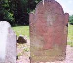
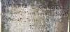
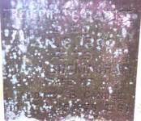
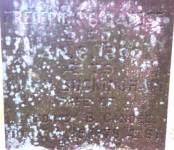

|
|
|
CANDEE |
|
Samuel Candee (1678 - 1749) and Abigail Pineon (1680 - 1742), who died at West Haven, and are buried there. |
|
|
There are 21 known
descendants of Samuel and Abigail buried at Jacks Hill.
1st generation - 1 son |
|
Samuel Candee (1705 - 1775) m. 1 May 1729 Mehitable Smith (1709 - 1799) is not buried at Oxford, but one of his children is buried at Jacks Hill Cemetery. Caleb Candee (1722 - 1777) m. Louis Mallory (1721 - 1790) is buried at Jacks Hill Cemetery with his wife and 19 descendants. |
|
Naboth Candee (1734 - 1784) m. 9 Dec 1761 Esther Trowbridge (1726 - 1813) is the only Candee buried at Jacks Hill who is not Caleb and Louis' line.  Caleb Candee (1743 - 1828) m. 10 Apr 1764 Anna Sperry (1741 - 1817) is buried at Jacks Hill Cemetery with his wife and 7 descendants. Capt. Samuel Candee (1754 - 1841) m. 20 Mar 1777 Mabel Bradley (1758 - 1839) is buried at Southford Cemetery, but has one daughter at Jacks Hill Cemetery. Deacon Justus Candee (1756 - 1842) m. 2 Dec 1788 Eunice Norton (1758 - 1840) is buried at Jacks Hill Cemetery with his wife and 9 descendants. |
|
Moses Candee (1765 - 1833) m. 21 Jan 1789 Sarah Woodruff (1769 - 1841) is buried at Jacks Hill Cemetery with his wife and 2 daughters. Erastus Candee (1783 - 1817) is buried at Jacks Hill Cemetery.  Annie T. Candee (1786 - 1848) m. 20 Nov 1803 Jeremy H. Twitchell (1784 - 1867) is buried with her husband and two daughters at Jacks Hill Cemetery. You can
see the headstones of Annie's father , and her brother
Moses in the background. Patty Candee (1788 - 1791) is buried at Jacks Hill Cemetery. Isaiah Candee (1779 - 1856) m. 25 Oct 1807 Melissa Riggs (1785 - 1867) is buried at Jacks Hill Cemetery with his wife and 4 children. Sheldon Wales Candee (1781 - 1821) m. Julia Ann Root (1790 - ) is not buried at Oxford, but has 2 descendants buried at Jacks Hill Cemetery. Burritt Candee (1786 - 1807) is buried at Jacks Hill Cemetery.
Lucy Candee (1790 - 1874) m. 15 May 1814 Ransom Mallory ( - 1853) is not buried at Oxford, but has an infant daughter buried at Jacks Hill Cemetery. |
|
Maria Emily Candee (1795 - 1833) m. Abraham Elisha Smith (1792 - 1874)  Caroline
Candee (1802 - 1861)
m. Nov 1833 Abraham
Elisha Smith
(1792 - 1874)
Mary J. Twitchell (1815 - 1872) m. John Pearsall and Martha Maria Twitchell (1821 - 1821) are buried with their mother and father at Jacks Hill Cemetery.
Eunice Augusta Candee (1810 - 1860) is buried at Jacks Hill Cemetery. Julia Ann Candee (1813 - 1816) Her headstone inscription was recorded in 1935, by Andrew Bell. "Candee, Julia A., daughter of Isaiah & Melissa, died Feb. 5, 1816, age 2 yrs. 5 mos." I was unable to find or identify this stone June 2002. John Candee (1816 - 1895) m. 28 Oct 1868 Lucy Ann Perkins (1836 - 1900) is buried at Jacks Hill Cemetery with his wife.  Mary Ann Candee (1820 - 1873) is buried at Jacks Hill Cemetery. Fredrick Burritt Candee (1811 - 1890) m. Mary Buckingham (1811 - 1878) is buried at Jacks Hill Cemetery with his wife and one son.  
Eunice Candee Mallory (1815 - 1815) is buried at Jacks Hill Cemetery. |
|
Andrew B. Candee (1842 - 1863) is buried at Jacks Hill Cemetery. |
2 - Samuel Candee (1705 - 1775) m. 1 May 1729 Mehitable Smith3 - Naboth Candee (1734 - 1784) m. 9 Dec 1761 Esther Trowbridge2 - Caleb Candee (1722 - 1777) m. Louis Mallory3 - Caleb Candee (1743 - 1828) m. 10 Apr 1764 Anna Sperry
4 - Moses Candee (1765 - 1833) m. 21 Jan 1789 Sarah Woodruff3 - Capt. Samuel Candee (1754 - 1841) m. 20 Mar 1777 Mabel Bradley5 - Maria Emily Candee (1795 - 1833) m. Abraham Elisha Smith4 - Erastus Candee (1783 - 1817)
5 - Caroline Candee (1802 - 1861) m. Nov 1833 Abraham Elisha Smith
4 - Annie T. Candee (1786 - 1848) m. 20 Nov 1803 Jeremy H. Twitchell5 - Mary J. Twitchell (1815 - 1872) m. John Pearsall
5 - Martha Maria Twitchel (1821 - 1821)4 - Patty Candee (1788 - 1791)3 - Deacon Justus Candee (1756 - 1842) m. 2 Dec 1788 Eunice Norton4 - Isaiah Candee (1779 - 1856) m. 25 Oct 1807 Melissa Riggs5 - Eunice Augusta Candee (1810 - 1860)4 - Sheldon Wales Candee (1781 - 1821) m. Julia Ann Root
5 - Julia Ann Candee (1813 - 1816)
5 - John Candee (1816 - 1895) m. 28 Oct 1868 Lucy Ann Perkins
5 - Mary Ann Candee (1820 - 1873)5 - Fredrick Burritt Candee (1811 - 1890 ) m. Mary Buckingham4 - Burritt Candee (1786 - 1807)6 - Andrew B. Candee (1842 - 1863)
4 - Lucy Candee (1790 - 1874 ) m. 15 May 1814 Ransom Mallory5 - Eunice Candee Mallory (1815 - 1815)
|
|
|